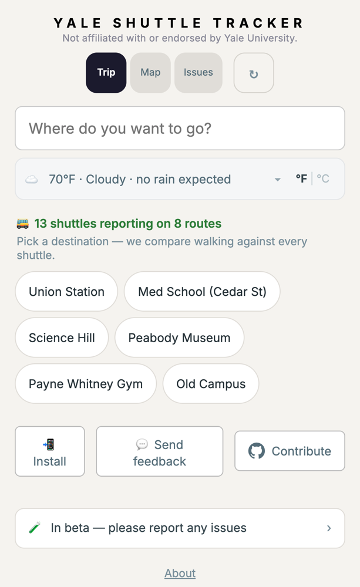
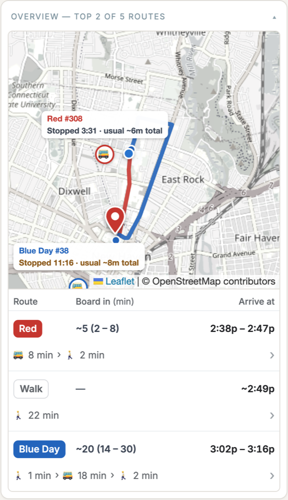

Yale Shuttle Tracker
A live map, stop-by-stop arrival times and a trip planner for Yale's Downtowner shuttles. It polls the shuttle GPS feed every 5 seconds and builds its own history of arrivals, dwell times and travel times between stops. Predictions are calibrated from what the buses actually did on that stretch of route at that hour and day of the week, not from the published timetable. The planner routes between any two points, including the walking legs.
A single Node service (Hono, SQLite) with a React front end, plus automated map and data checks that catch bad predictions before riders see them.

